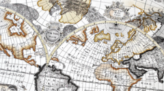

<html>
  <head>
    <title>The Road So Far...</title>
    <link href="css/reset.css" rel="stylesheet" type="text/css" />
    <link rel="stylesheet" href="http://libs.cartocdn.com/cartodb.js/v3/themes/css/cartodb.css" /> 
    <link href="css/style.css" rel="stylesheet" type="text/css" />
    <!--[if lte IE 8]>
      <link rel="stylesheet" href="http://libs.cartocdn.com/cartodb.js/v3/themes/css/cartodb.ie.css" /> 
    <![endif]-->
    <style>
      html, body, #map {
        height: 100%;
        padding: 0;
        margin: 0;
      }
    </style>
    <script type="infowindow/html" id="infowindow_template">
      <div class="cartodb-popup">
        <a href="#close" class="cartodb-popup-close-button close">x</a>
         <div class="cartodb-popup-content-wrapper">
           <div class="cartodb-popup-cont">
            {{#content.data.img}}
            <ul><li><h4>{{content.data.name}}</h4></li></ul>
            {{/content.data.img}}
            {{^content.data.img}}
            <ul><li><h4>{{content.data.name}}</h4></li></ul>
            {{/content.data.img}}
            {{#content.data.video_url}}
              <a class="videoButton" href="{{content.data.video_url}}" target="_blank"> </a>
            {{/content.data.video_url}}
            <p>{{{content.data.description}}}</p>
           </div>
         </div>
         <div class="cartodb-popup-tip-container"></div>
      </div>
    </script>
  </head>

  <body>

    <div id="map"></div>
    <div id="overlay"></div>
    <div id="pointTT">
      <p></p>
    </div>

    <!--Custom html for the infowindow customization-->
    <!--You can write simple html or use Mustache templates http://mustache.github.com/-->
    <!--Content.data contains the field info-->
    <script type="infowindow/html" id="infowindow_template">
               <div class="cartodb-popup-tip-container"></div>
      </div>
    </script>

    <!--Include the js. Please be sure that you use a locked version in case you go to production-->
    <script src="http://libs.cartocdn.com/cartodb.js/v3/cartodb.js"></script>
    <script type="text/javascript" src="map.js"></script>

  </body>
</html>
